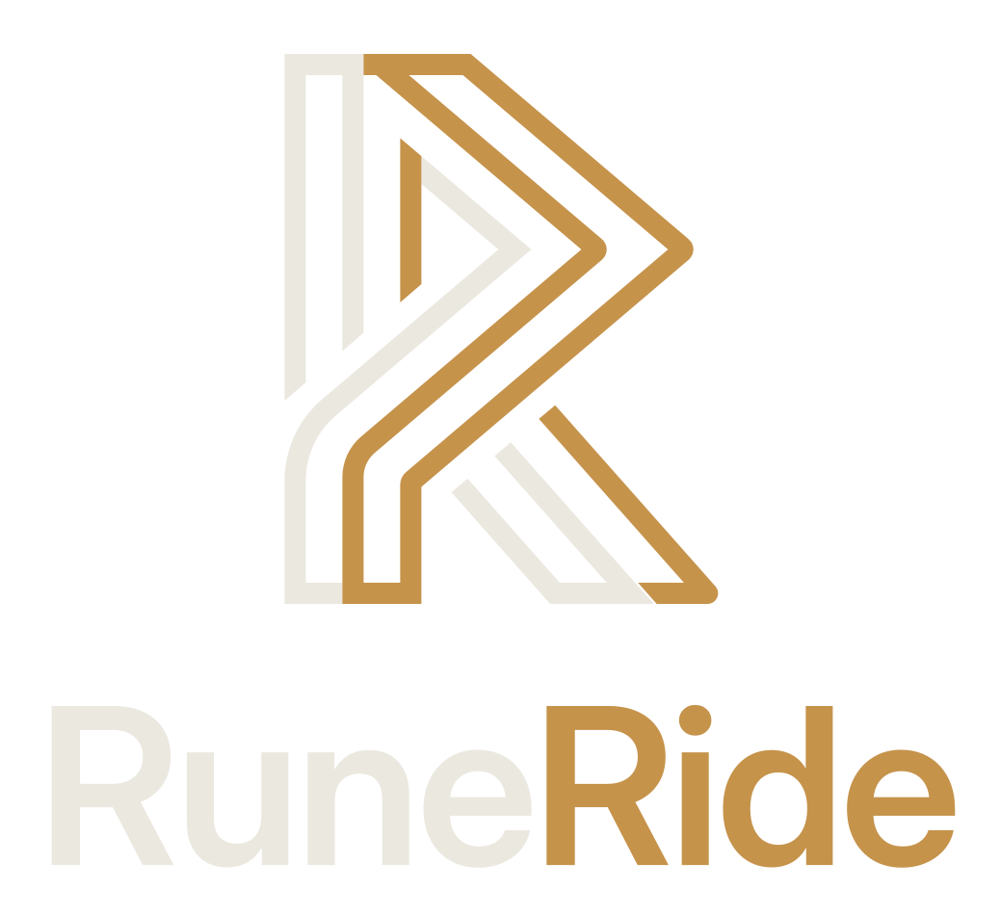
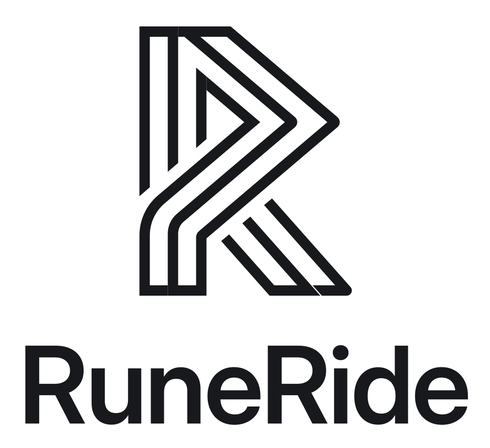
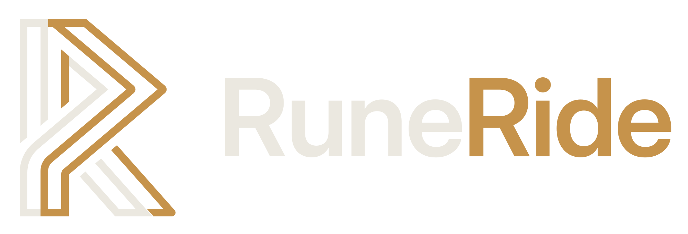
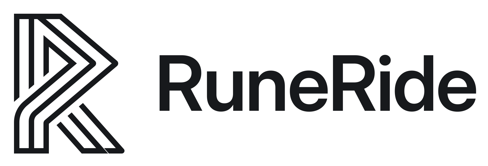
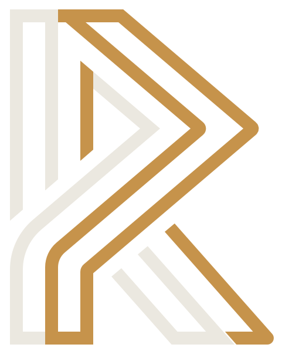
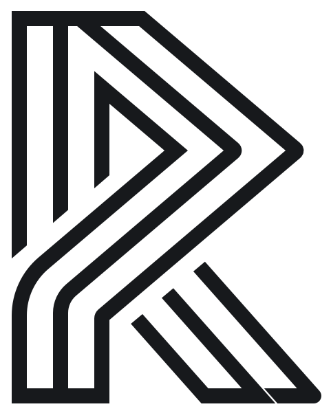

Nordic Craft & Modern Telemetry — brand board
Logo
Monogramme issu de la rune Raidho (ᚱ) et d'un double R : deux rubans parallèles, chalk et ochre, comme une route à double voie ou une trace GPS.






Icône d'app & favicon
Logo complet dès 32 px ; version simplifiée (traits épais, un seul ruban ochre) uniquement pour 20 px et moins (favicon 16 px).
Couleurs
Dark-first : contraste, économie OLED, lisibilité sans reflet sur un guidon en plein soleil. Aplats mats, jamais de dégradé métallique.
Typographie
Interface · Inter
Grande x-height, lecture d'un coup d'œil pendant la conduite. Poids 400 / 500 / 600.
Télémétrie · JetBrains Mono
Chiffres tabulaires (tabular-nums) : les valeurs ne tremblent pas quand elles changent.
Composants
Cibles tactiles ≥ 48 px (56 px pour les boutons primaires), surfaces plates, bordure 1 px, ochre uniquement pour l'actif et l'important.
Boutons
80 % utilité, 20 % lore : le libellé principal reste explicite.
Télémétrie
Avant-poste
États
Séparateur runique : ligne fine, losange ochre au centre.
Univers
Un Pacte entre les Nains de l'Enclume et les Elfes de la Canopée, scellé au Haut Col de Raidho (ᚱ). Détail complet dans CODEX.md.
Les trois Ordres
L'Ordre de l'Enclume
Maîtrise mécanique, hauts cols, grand tourisme, entretien (La Forge d'Acier) et sobriété.
Les Éclaireurs Sylvestres
Petites routes, pistes, fluidité en courbe, chronique 360° (L'Orbe du Voyant), POI cachés.
Les Veilleurs du Foyer
Sorties de groupe (La Compagnie), prix du carburant, assistance panne (Les Feux de Garde).
Les cinq Clans · segment de la moto
Les Seigneurs des Valises d'Argent
Rois nains de la caravane : trois valises alu, selle chauffante, antibrouillards à aveugler un dragon.
Les Éclaireurs des Cimes
Rôdeurs de montagne : aucune peur de la boue, mécanique simple, sac étanche sur la selle.
Les Faucons d'Émeraude
Lanciers du vent : allergiques aux lignes droites, ils vivent d'Avant-poste en Avant-poste.
Les Barons du Tonnerre
Berserkers du foyer de fer : chrome poli, présence avant l'angle, étincelles sous les repose-pieds.
Les Alchimistes du Café
Bardes artisans : cuir vintage, casques jet, légende devant la taverne — s'il ne pleut pas.
Dictionnaire in-app · 80 % utilité, 20 % lore
| Module | Titre de lore | Sous-titre fonctionnel |
|---|---|---|
| Accueil | Le Foyer The Hearth | Tableau de bord & Campement |
| Planificateur & GPX | Les Parchemins de Pierre Stone Scrolls | Itinéraires, Traces GPX & Cartes hors-ligne |
| Waypoints & cols | Les Pierres de Gué Waystones | Cols, Points d'intérêt & Étapes |
| Caméra 360° | L'Orbe du Voyant The Seer's Orb | Montage Insta360 & Chroniques vidéo |
| Télémétrie | Les Runes Cinétiques Kinetic Runes | Angle, Vitesse & Statistiques |
| Carburant | La Bourse de l'Intendant Quartermaster's Ledger | Stations-service & Prix du carburant |
| Garage | La Forge d'Acier The Iron Forge | Carnet d'entretien, Pneus & Consommables |
| Groupe | La Compagnie The Fellowship | Balades en groupe & Suivi de meute |
| SOS | Les Feux de Garde The Watchfires | Assistance panne & Alerte de sécurité |
Rangs (niveaux 1 à 7)
- Vagabond des Sentiers
- Porteur d'Écusson
- Graveur de Pierres
- Arpenteur des Cimes
- Maître-Forgeron de l'Asphalte
- Seigneur de la Compagnie
- Gardien des Hautes Runes
Les Adversaires · alertes système
L'Ombre Grise
Autoroutes et lignes droites → option « Éviter les autoroutes ».
La Morsure de la Rouille
Plaquettes, chaîne, huile → rappels d'entretien de la Forge.
Le Brouillard Aveugle
Zones sans réseau, orages → mode hors-ligne et alertes météo.
Voix & micro-copy
Épique pour planifier et célébrer, limpide pour rouler. Détail dans LORE.md et CODEX.md.
À faire
- Aplats mats, bordures 1 px
- Chalk pour les valeurs, ochre pour l'important
- Libellé explicite + sous-titre lore
À éviter
- Cornes, boucliers, polices médiévales
- Orange néon, flammes, damier
- Dégradés dorés, ombres lourdes, glassmorphism
- Termes Tolkien déposés